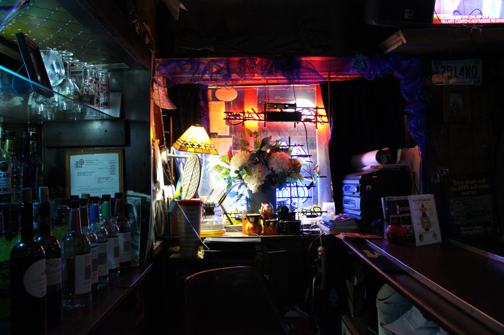

Feeling the Paris Blues in Harlem
December 20, 2016 by Ricardo Montero

A man in a light brown godfather hat glides through the crowd, seemingly floating towards the smooth jazz coming from the trumpet on stage. The man turns and goes behind the bar, and there stands Samuel Hargress Jr. and his matching zoot suit.
A living embodiment of the 70s is ‘Mr. Blues’ or ‘Alabama Sam,’ standing to face his old jazz bar, Paris Blues, which remains untouched by time and circumstance. A man and his timecapsule.
The bar froze in time the day it was opened on Nov. 15, 1969.
The same dark brown countertop, brown seats and brown tables, worn from use, sit there and wait for a human to claim them, just as they have done for the past 47 years. A million tiny scratches decorate almost every surface and some of the seat cushions have duct tape covering up lacerations in the fabric.
There are dozens of pictures on the ceiling and the walls of the bar. For the most part, it is black musicians, politicians and civil rights activists in the frames, with repeated appearances by President Barack Obama, Martin Luther King Jr., Malcolm X and Louie Armstrong.
Blue ribbons snake around the edges of the room, reminiscent of cold and distant Christmas memories. Blue tablecloths cover the dark brown tables in a strange choice of color palette that makes the dimly-lit tavern’s decoration disagree, but with committed purpose.
A thin layer of dust covers the crystal vases, photographs, lamps and the thousands of other items scattered all around the place, but instead of making the cleanliness questionable, the dusty shelves actually add to the bizarre magical appeal that attracts people every night of the week. The traditional standards of what a bar in 2016 should look like are forgotten as soon as the clock strikes 9 p.m. signaling show time, and the people start pouring in.
The Man
Hargress stands by the door of his bar with his hands in his pockets. Although 80-years-old, his posture remains tall and his energy strikingly youthful. The owner of Paris Blues greets his guests at the door every day of the week, with a gentleman charm that is obviously well-trained in the legendary arts of southern hospitality.
“Hey how you doin’?” he said to a couple coming in. His native Alabama accent perfectly intact even after 6 decades of living away from home.
Hargress thanks his home state for his love of jazz and blues, and how the genres speak to the struggles of the black man in America. “Jazz and blues relate to us black people. We grew up around jazz and blues, and when they’re singing or playing they talk about their situation and if you from Alabama you know what the blues is,” he said.
Then again, Alabama in the 1900s wasn’t all about music.
He was born in Demopolis, Marengo County, in 1936, into the racist and oppressive Jim Crow Laws. His family owned little “juke joints,” around the state to get by, something that would later help him manage Paris Blues.
“You were on your own. [the Jim Crow Laws] helped us some because we knew how they worked. If you from Alabama from my time, you know how to use a saw, a hammer and a screwdriver because you’d have to do everything yourself,” he said. “I learned how to do all the different things you need to do to survive on your own.”

He knew the business and all he had to do was get a bar, but that’s when he got drafted into the Army.
In the 1950s the Selective Training and Service Act was active — the first peacetime draft in the U.S. — and all men 18 years or older had to register. According to the National Archives, the men would be drafted to do different military jobs, not just infantry, for 21 to 24 months until 1973 when it ended. Hargress was one of the lucky ones, and he got to work as military police in Germany and France, and it was during his time in Paris that he fell in love with the francophone culture.
After his service he returned to Alabama, during the peak of the Civil Rights Movement and even marched with Martin Luther King Jr. from Selma to Montgomery in 1965. He witnessed first-hand the violence that the civil rights leaders had to survive in their quest for basic human liberties.
“We were in the back. The leaders was up front and they are the ones that got beat up pretty bad,” he said. “The Sheriff Jim Clark and his boys was up in the front so they beat up a few people there.”
Shortly after he traveled to New York and moved in with his older brother, David, who got him a job at a bar in Harlem. “Things got a little bad and the bar owners wanted to leave,” he said, so they sold Hargress the bar for $14,000, in cash — everything that he had saved up to that point — A sum that equals $93,300 in 2016.
It was at that moment that he remembered Paris, the blues and a nostalgia for Alabama. France gave him freedom but the U.S. gave him music, and he would go on to name his bar something that would capture the grateful sadness of a lonesome Black American in Paris.
The Band
Frank Bambara walks in. He was wearing a black polo and a stern look on his face. He goes towards the stage at the far end of the bar and sits behind the drum kit, he straightens the snare, checks the bass drum and starts setting up his cymbals. Bambara takes out his drum sticks, puts them on the snare and waits for his bandmates to get ready. The drum heads show the blemishes and scars of past drum solos, but the sound remains true.
Bambara watches on as Jack Glottman adjusts his piano, Motoki Mihara picks at his bass, Tigarr cleans his trumpet and Okaru Love connects the microphone to the speaker. Together they form ‘Beautiful Journey,’ and they have been playing at Paris Blues every Friday night for the past two years.
“I love it. It’s like home,” Love said about the bar. “Sam the owner is so hospitable. There is no place like this, it is the best place in New York and in the world.” She was holding a Paris Blues microphone, at one time perfectly round, now bent and jagged.
They finish tuning their instruments and the energy in the place intensifies as the customers wait for the first note to be played. The band grabs the anticipation, holds it for 6 seconds, and with a crash of the cymbals Bambara releases the pressure with an explosion of funky soul that had everyone in the bar immediately invested. The comfort was sudden and natural, and the resilience of that little old bar in 121 St. was finally explained.
‘Beautiful Journey’ plays jazz, funk, reggae, bossa nova amongst other genres, and it perfectly summarizes the ethnic and cultural diversity that makes Paris Blues the world-famous place that it is today. Music for everyone brings people from everywhere, including people from France, Brazil, Mexico, Hungary, England and Japan, amongst others.
Although the international visitors have been good for business at Paris Blues, the tourism has been a direct result of the ongoing gentrification in Harlem. Some Harlem residents expressed concern about the rising housing prices, but for small business owners like Hargress, it’s been nothing but good news.
“I own the building and gentrification has only made me wealthier,” Hargress said. He lives above his noisy bar and does not have a problem sleeping.
The People
Gentrification brings to Harlem tourists and taxis that wouldn’t dare go past 110th street a few years ago, but at the expense of old Harlem residents who can no longer afford living there.
As far back as 1930, questions of gentrification began to arise. Author, lawyer and civil rights activist, James Weldon Johnson, wrote “Will the Negroes of Harlem be able to hold it?” in his book “Black Manhattan.” However, from the 1930s to the 1960s, Harlem’s declining social conditions gave the neighborhood a sensationalist and decidedly negative reputation, according to the International Encyclopedia of the Social Sciences, effectively inviting urban renewal that resulted in the first Starbucks by 2000. Nowadays, the once-upon-a-time black neighborhood of New York City is host to all kinds of different people, and that shift is obvious at Paris Blues.
Whites, blacks, latinos and Asians shared Coronas with limes and tapped their fingers to the beat of the drums, sometimes in unison and sometimes in dissonance.
A few wrinkles and white hairs decorated the young crowd that didn’t seem to mind the generational difference, because people can be like jazz, sometimes unfazed by the inevitable wither of time.
A middle aged woman sat with a large group at a corner of the bar. It’s not like Debra Quinn didn’t know jazz, after all she was born in New Orleans, but she has been living in Los Angeles for the past few years.
She had heard about the jazz scene in Harlem from an article on the L.A. Times, and decided to take a tour with Big Apple Jazz Tours, now she found herself enjoying a glass of cabernet sauvignon and listening to Bambara’s drum solo.
“This is the first time I spend any quality time in Harlem,” she said. “I’m having a really good time and the service is instant” nodding her head towards the bar.
That service came from the bartenders, Esther Stokes and her sister Judith, two middle-aged Dominicans that tend to guests, wait tables and manage the cash register with their own brand of latin charisma.
Esther has been working at Paris Blues for 14 years, and was already very familiar with the musicians and the neighborhood that she has hosted for more nights than she dared to remember. “I like most of the artists, but my favorite thing about Paris Blues is the people. They come from everywhere,” she said in Spanish. “I like celebrating people’s birthdays most of all.”
The birthdays, yes, but also Hargress who Esther described as “marvelous and trustworthy of his employees. A hard worker that makes you think that anything is possible.”
Esther and Judith were pouring glasses of wine with two hands and business was good. Just a few hours after 9:00 p.m., the bar was bustling with activity and lacked space to walk to and from the bar. Customers were putting money on the counter, others danced where they stood and some had their eyes closed, whether from the drinking or the music, and they bobbed their heads and air-drummed without a care in the world.
The audience was one and vibing in unison. All around the bar “yeahs” and “woos” would escape lips from time to time, at times even exclamations in French, Japanese, Spanish and the occasional Hungarian. All sentiments triggered by the drums, the trumpet, the piano, the bass and the voice coming from the stage sounded genuine and almost involuntary. Nostalgic. Free.
Yet, despite all the commotion was Hargress, still standing by the door of his old bar listening to the jazz play. He must have been used to the lively atmosphere by now, but he still seemed to enjoy himself.
The blues and jazz, with their sudden and passionate musical solos, almost guarantee a different show every day, like a rough metaphor for everyday life. “I like Frank Sinatra because he would say that he was up and down and over and out and back on top,” Hargress said. “That’s life.”
It is perhaps jazz’s honest portrayal of life what has motivated Hargress and his bar to persevere, because despite the ups and downs and overs and outs that life has given him, he and his business have managed to stay relevant. That resilience in the face of difficulty is what has lead Paris Blues to stand defiantly in front of time and challenge it for five decades. Its determination to ignore the natural mortality of human nature and simply play the blues.